Alignment of monsters (name background): dark gray = chaotic, light gray = neutral, white = lawful.
Uniqueness of monsters (tile background): orange = unique, yellow = named representant(s), white = common.
For more detailed corpse effects, see section 0.3.3. For descriptions of monster's spells, see section 0.9.9.
| Name | Symbol | Tile | Special attacks/defenses | Corpse chance: effects | Misc |
|---|---|---|---|---|---|
| Ancient Chaos Wyrm | W |
| corrupting touch, spells (healing, energy ray, confusion), immune to fire | 100%: corrupts (~2 effects), -Fire, (+1 St) (+3 St), (+1 Ma) | carries Chaos Orb of Elemental Fire, sees invisible, sees in the dark, can smash doors |
| Ancient Stone Beast | F |
| corrupting touch, passes through walls, regens, throws huge rocks | 100%: corrupts (~3 effects), +2 St, +4 To | carries Chaos Orb of Elemental Earth, sees invisible, sees in the dark, vulnerable to mining, bounces bolts |
| Chaos Archmage (Nuurag-Vaarn) | @ |
| corrupting touch, spells (all except healing), summons random monsters, teleports, bypasses PV; immune to fire, cold, shock, ignores traps | 100%: corrupts (~5 effects), +50 PP, (+12 Ma) | carries Chaos Orb of Elemental Mana, sees invisible, sees in the dark |
| Master Summoner (Yulgash) | @ |
| corrupting touch, summons random monsters, teleports, immune to shock | 100%: corrupts (~2 effects), +4 Le, +4 Wi, +4 Ma | carries Chaos Orb of Elemental Air, sees invisible, sees in the dark |
| Snake from Beyond | s |
| corrupting touch, poisons, ignores water | 100%: corrupts (~2 effects), +4 Dx, +4 Ma | carries Chaos Orb of Elemental Water, sees invisible, can smash doors |
| Name | Symbol | Tile | Special attacks/defenses | Corpse chance: effects | Misc |
|---|---|---|---|---|---|
| Acid vortex | V | immune to acid, ignores water, explodes as acid ball if in melee range | |||
| Air demon | & | 
| corrupting touch, immune to shock; ignores water, traps | sees invisible, sees in the dark | |
| Air elemental | E | 
| breathes lightning, immune to shock; ignores water, traps | sees invisible | |
| Air grue | x | 
| corrupting touch, immune to shock; ignores water, traps | sees invisible | |
| Ancient black dragon | D | 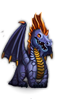 | breathes acid, immune to acid | 3%: -Acid, +1 Wi | drops treasure when killed, sees invisible, sees in the dark, can smash doors |
| Ancient blue dragon | D | 
| breathes lightning, immune to shock | 3%: -Elec, (+1 Dx) | drops treasure when killed, sees invisible, sees in the dark, can smash doors |
| Ancient blue wyrm (Srraxxarrakex) | W | 
| breathes lightning, regens, immune to shock, spells (confusion, glowing balls, healing) | 3%: =Elec, (+6 Dx), (+5 Ma), (+5 To), (+1 Pe) | ancient karmic wyrm's arch enemy, must be slain for Ultra endings; drops treasure when killed, sees invisible, sees in the dark, can smash doors |
| Ancient dwarf (Thrundarr) | h | 
| 2%: +Curs, +PP | assigns various quests; sees invisible, sees in the dark | |
| Ancient karmic dragon | Color- changing D | 
| karmic being, breathes various bolts, immune to elemental attacks | 3%: karmic being | drops treasure when killed, sees invisible, sees in the dark, can smash doors |
| Ancient karmic wyrm (Sharad-Waador) | Color- changing W | 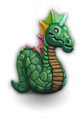 | karmic being, breathes various bolts, immune to elemental attacks, regens, spells (confusion, glowing balls, healing) | 3%: karmic being, (+10 To), (+10 Ma) | wants ancient blue wyrm killed, rewards PC with a heap of stuff including Needle; drops treasure when killed, sees invisible, sees in the dark, can smash doors; wishable |
| Ancient minotaur | M | 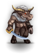 | ignores traps | 15%: -1 Wi, (+1 Pe), confuses | sees invisible, sees in the dark, can smash doors |
| Ancient red dragon | D | 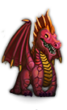 | breathes fire, immune to fire | 3%: -Fire, (+1 St) | vulnerable to cold, drops treasure when killed, sees invisible, sees in the dark, can smash doors |
| Ancient sage (Khelavaster) | @ | 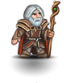 | spells (all), ignores traps | summons TotRR for non-chaotics, non-fallen champions (vital for Ultra endings); sees invisible, sees in the dark; see also Dying sage | |
| Ancient white dragon | D | 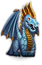 | breathes cold, immune to cold | 3%: -Cold, +1 To | vulnerable to fire, drops treasure when killed, sees invisible, sees in the dark, can smash doors |
| Animated armor | [ | 
| immune to fire, ignores traps | vulnerable to shock | |
| Animated tree | P | 
| vulnerable to fire; may drop log when killed; PC can't swap places with one | ||
| Ankheg | i | 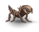 | breathes acid, immune to acid | 10%: -Acid, races other than Trolls and Orcs vomit | digs, sees in the dark |
| Annihilator | C | 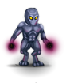
| destroys worn items | can smash doors | |
| Annis hag | h | 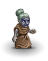 | spells (curse) | 3%: +Curs | |
| Arena master (Dak) | @ | 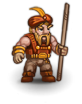 | arranges Arena fights; sees invisible | ||
| Assassin | @ | 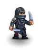
| poisons | 3% | reward from Tywat Pare for corpse |
| Assassin Prince | @ | 
| poisons, bypasses PV, ignores traps | assigns Filk quest, carries Sting; sees invisible, sees in the dark |
| Name | Symbol | Tile | Special attacks/defenses | Corpse chance: effects | Misc |
|---|---|---|---|---|---|
| Baby water dragon (Blup) | D | 
| ignores water, breathes water, immune to cold | 3%: +WBre | sees invisible; desperately wants to find his mum – the great water dragon; killing causes alignment drop |
| Balor | & | 
| corrupting touch, teleports, summons random monsters, immune to fire, ignores traps | sees invisible, sees in the dark, can smash doors; may drop scourge when killed | |
| Bandit | @ | 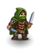 | 10% | reward from Tywat Pare for corpse | |
| Banshee | G | 
| deadly scream (from which males can protect themselves by wielding a wedding ring) | sees invisible, sees in the dark; wishable | |
| Barbarian (leader) | K K |  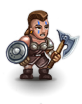 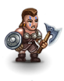 
| shoots arrows | 3%, 3% | |
| Battle bunny | r | 
| breeder, bypasses PV | 3%: "You feel aggressive." trains St, Dx, To, abuses Le | see also Mutated battle bunny |
| Beggar | @ | 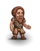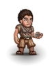 | 3% | may drop potion of booze when given 40 gp then chatted with, Yggaz will trade random potions for these; killing causes alignment drop | |
| Berserker (lord, prince, king, emperor) | K K K K K | 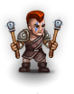 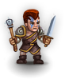  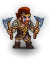 
| can be tamed by giving them a wedding ring, by a PC of the same opposite gender | ||
| Big casino guard (Hugo) | @ | 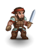 | paralyzes | much tougher than normal casino guards, sees invisible, can smash doors; wishable | |
| Big dog | d | 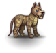 | 15% | ||
| Black dragon hatchling | D | 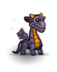 | breathes acid, immune to acid | 3%: -Acid | drops gold when killed |
| Black dragon | D | 
| breathes acid, immune to acid | 3%: -Acid | drops treasure when killed, can smash doors |
| Black druid (Keethrax) | @ | 
| corrupting touch, spells (confusion, darkness, glowing balls, healing, attribute drain, curse), shoots sling bullets, immune to fire, cold, shock; ignores water, traps | 100%: corrupts (~1 effect), -4 Wi, +3 Ma, +2 Le, +1 To, alignmnet drop | sees invisible, sees in the dark; carries Black Torc |
| Black hurthling | h | 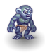 | shoots tiny quarrels | 5% | |
| Black slayer | X | 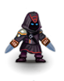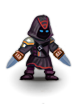 | poisons, regens | can smash doors | |
| Black unicorn | U | 
| teleports, regens | 2%: corrupts (~3 effects) | sees invisible, sees in the dark |
| Black wizard | @ |  
| summons random monsters, spells (curse) | ||
| Blink dog | d | 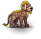 | teleports, summons more blink dogs | 5%: +TCtr | blink dogs have lawful alignment – killing them will move PC's alignment towards chaotic |
| Blue dragon hatchling | D | 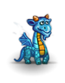 | breathes lightning, immune to shock | 3%: -Elec | drops gold when killed |
| Blue dragon | D | 
| breathes lightning, immune to shock | 3%: -Elec | drops treasure when killed, can smash doors |
| Bone Golem | Y | 
| immune to fire, cold, ignores traps | sees invisible, sees in the dark, can smash doors; wishable | |
| Brown bear | N | 
| 12% | ||
| Brown worm | w | 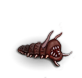 | paralyzes, breeder | ||
| Bugbear | g | 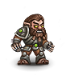
| 10% | can smash doors | |
| Bulette | F | 
| 15% | digs, can smash doors | |
| Bunny master (Bugs) | @ | 
| disarms | affects battle bunnies' breeding rate | |
| Burly adventurer (Hawkslayer) | @ | 
| shoots eternium arrows | potential companion; can smash doors |
| Name | Symbol | Tile | Special attacks/defenses | Corpse chance: effects | Misc |
|---|---|---|---|---|---|
| Carpenter (Yrrigs) | t | 
| trains Bridge Building; killing causes alignment drop | ||
| Carrion crawler | c | 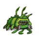 | paralyzes | 12% | sees in the dark |
| Casino guard | @ |  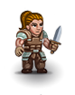 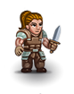
| paralyzes | sees invisible, can smash doors | |
| Cat Lord | f | 
| spells (invisibility), bypasses PV | 3%: +Doom, (+6 Dx) | PCs who have killed no cats receive RotMC, otherwise Cat Lord's strength is proportional to the number of cats killed; sees invisible, sees in the dark, can smash doors |
| Cave bear | N | 
| 12% | ||
| Cave fisher | S | 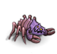 | 10%: poisons, -Pois, races other than Dark Elf vomit | spins webs | |
| Cave lion | f | 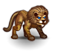 | 5% | killing angers Cat Lord | |
| Cave lizard | l | 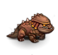 | 7% | sees in the dark | |
| Cave tiger | f | 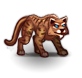 | 5% | killing angers Cat Lord | |
| Caveman | @ | 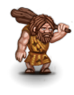 | throws clubs, immune to cold | 6% | can smash doors |
| Chaos brother | @ | 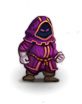 | corrupting touch | sees in the dark | |
| Chaos eye | e | 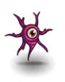 | corrupting touch; ignores water, traps | ||
| Chaos knight (MaLaKaI) | h |  
| poisons | sees invisible, drops eternium stuff; a named chaos knight MaLaKaI guards Sceptre of Chaos in Infinite Dungeon | |
| Chaos lizard | l | 
| corrupting touch, breathes various bolts | 7%: corrupts | |
| Chaos mutant | C | 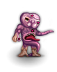
| corrupting touch | sees invisible | |
| Chaos plague bearer | C | 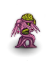
| corrupting touch, sickness | ||
| Chaos rat | r | 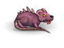 | corrupting touch, breeder, ignores water | 8%: corrupts very little | |
| Chaos servant | C | 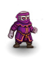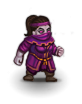 | poisons | sees invisible | |
| Chaos sister | @ | 
| corrupting touch | sees in the dark | |
| Chaos spawn | C | corrupting touch, breeder, sickness, bypasses PV | |||
| Chaos spider | S | 
| corrupting touch | 8%: poisons, -Pois, corrupts, races other than Dark Elf vomit | spins webs |
| Chaos viper | s | 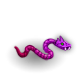 | corrupting touch, poisons | 1%: poisons, -Pois, corrupts (~1 effect), (+1 Dx), (+1 Sp) | |
| Chaos warlord | C | 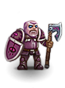 | corrupting touch, regens | can smash doors | |
| Chaos warrior | C | 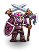
| corrupting touch, regens, poisons | ||
| Chaos wizard | C |  
| corrupting touch, summons (greater) chaos servants, writhing masses of primal chaos, chaos warriors | sees invisible | |
| Child | t | 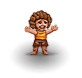
| only found in Terinyo; killing causes alignment drop | ||
| Claw bug | i | 
| breeder, bypasses PV, multiple attacks | 5%: -2 Wi, (+1 Dx) | |
| Clay golem | Y | 
| slows, immune to acid | can smash doors | |
| Cloaked ratling (Skriek) | r | 
| bypasses PV | sells keys; wishable | |
| Cobra | s | 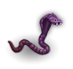 | poisons | 1%: trains To | |
| Cooshoo | d | 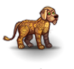 | sleep | 4%: sleep | |
| Corpse fiend | z | 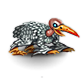 | sickness | sees in the dark | |
| Corruptor | C | 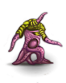 | corrupting touch, bypasses PV | ||
| Crime lord (Hotzenplotz) | @ | poisons, bypasses PV, ignores traps | assigns Sheriff and Healer quests; sees invisible; killing causes alignment drop | ||
| Crystal statue | Y | 
| immune to cold, regens | ||
| Cute Dog | d | 
| ignores water | 100%: removes +Luck and +Fate, +Curs, +Doom | never rotting corpse; wishable; killing causes alignment drop |
| Cutpurse | @ | 
| pickpockets | 3% | reward from Tywat Pare for corpse |
| Cyclops | H |  
| throws huge rocks | 5%: (+1 St) |
| Name | Symbol | Tile | Special attacks/defenses | Corpse chance: effects | Misc |
|---|---|---|---|---|---|
| Dark elven archer | u | shoots tiny quarrels | 2%: -Pois, -1 To, (+1 Dx) | sees in the dark | |
| Dark elven lord | u | poisons | 2%: -Pois, -2 To, (+2 Dx) | sees in the dark | |
| Dark elven priestess | u | corrupting touch, summons spiders, paralyzes | 2%: -Pois, -1 To, (+1 Dx) | sees in the dark | |
| Dark elven princess | u | poisons, summons spiders | 2%: -Pois, -2 To, (+2 Dx) | sees in the dark | |
| Dark elven warrior | u |  
| poisons | 2%: -Pois, -1 To, (+1 Dx) | sees in the dark |
| Dark elven wizard | u | spells (energy ray), summons spiders | 2%: -Pois, -1 To, (+1 Dx) | sees in the dark | |
| Dark orc | o | 
| 3%: (+1 St) | can smash doors, sees in the dark | |
| Dark sage | @ | spells (energy ray, shock bolt) | 7%: affects Literacy | ||
| Death ooze | j | poisons, regens | |||
| Demented Ratling | r | becomes more powerful each time he consumes an artifact; bypasses PV | demands six artifacts in exchange for Stone Circle access; wishable | ||
| Diamond golem | Y | 
| immune to fire, cold, shock, acid, bypasses PV | sees invisible, sees in the dark, can smash doors | |
| Dire wolf | d | 
| 4% | ||
| Displacer beast | F | 15%: teleports, stuns, confuses | |||
| Djinni | & | bypasses PV | never spawned naturally – PC will only meet a djinni if they use a non-blessed ring of djinni summoning or wish for one | ||
| Doppelganger (greater, ultimate) | @ identical to PC's color |   
| confuses, deflects missiles, kings adjust in power and bypass PV | 12%, 7%, 1%: king & Trolls: (+1 every attribute) | non-Trolls will only eat doppelganger corpses when starving, Trolls can eat them anytime |
| Dorn Beast | F | paralyzes unless PC is blind | can smash doors | ||
| Dragon turtle | A | ignores water, breathes water | can smash doors | ||
| Druid (Guth'Alak) | @ | 
| spells (glowing balls, confusion, teleport, healing), ignores water, immune to fire, cold, shock | assigns Keethrax and Yrruir quests; killing causes alignment drop | |
| Dwarf | h | 15%: can't be eaten by Dwarves | digs; may drop pickaxe when killed | ||
| Dwarven artificer (Kherab) | h | 
| immune to fire, bypasses PV, regens, ignores traps | carries anvil and eternium warhammer; assigns Guth'Alak and Thrundarr quests; sees in the dark | |
| Dwarven chaos knight | h | sees invisible; may drop pickaxe or wand of digging when killed | |||
| Dwarven child | h | 
| 2%: +Doom, +Curs; can't be eaten by Dwarves | only found in Dwarftown; killing causes alignment drop | |
| Dwarven elite guardian | h | 2%: (+1 Wi); can't be eaten by Dwarves | dig, only two in the game, in Dwarftown; can smash doors; wishable | ||
| Dwarven guardian | h | 
| throws hand axes | 2%: can't be eaten by Dwarves | digs, can smash doors; only found in Dwarftown |
| Dwarven innkeeper (Torgall) | h | source of rumors and ales for 1gp; wishable | |||
| Dwarven Mystic | h | 
| provides rewards for those that manage to reach him | ||
| Dwarven smith (Glod) | h | 
| immune to fire, bypasses PV | carries anvil, warhammer; fixes rusty or broken items, teaches Smithing, rents smithy; wishable; killing causes alignment drop | |
| Dwarven weaponmaster (Garth) | h | trains attributes other than Ap, Ma | |||
| Dying sage (Khelavaster) | @ | 
| deflects missiles | sees invisible; will enlighten PC about the Chaos Orbs, saving him is vital for Ultra endings; see also Ancient sage |
| Name | Symbol | Tile | Special attacks/defenses | Corpse chance: effects | Misc |
|---|---|---|---|---|---|
| Earth elemental | E | passes through walls, throws rocks, regens | may drop sling when killed; sees invisible, sees in the dark, vulnerable to mining | ||
| ElDeR cHaOs GoD (Andor Drakon) | @ | 
| spells (all except healing), paralyzes, teleports, drains PP, drains St and To, corrupting touch, passes through walls, speeded by spellcasting, bypasses PV; ignores water, traps | what corpse? ;-) | in his palace, landscape changes constantly; killing him makes PC the new ChAoS gOd or an avatar of PC's alignment; sees invisible, sees in the dark |
| Emperor lich | L | 
| spells (death ray, confusion, cone of cold, attribute drain, curse, healing, glowing balls), summons random monsters, paralyzes, immune to cold | sees in the dark, sees invisible, can smash doors | |
| Emperor Moloch | & | 
| adjusts in power, regens, bypasses PV, immune to fire, cold, ignores traps | 3%: -6 Dx, (+6 St), (+8 To), corrupts (~2 effects), alignment drop | sees invisible, sees in the dark, can smash doors; wishing for him yields greater molochs if he's not already dead, drops guaranteed moloch armor and crumpled scroll; digs |
| Eternal Guardian | @ | 
| bypasses PV | wearing RotHK grants passage past EG, duplicates if he moves from stairs when attacked; sees invisible, sees in the dark, can smash doors | |
| Eternium golem | Y | breathes acid, immune to fire, shock, ignores traps | sees invisible, sees in the dark, can smash doors | ||
| Ettin | O |  
| 5%: (+1 St) | ||
| Eye of destruction | e | 
| destroys worn items, confuses, ignores traps |
| Name | Symbol | Tile | Special attacks/defenses | Corpse chance: effects | Misc |
|---|---|---|---|---|---|
| Fairy dragon | D | breathes various bolts and water, sleep, spells (teleport, confusion) | 2%: cures sickness, confuses | ||
| Farmer | t | 
| trades large rations for scythes, sickles; corpse is quest object for Gaab'Baay; killing causes alignment drop | ||
| Female dwarf | h | 2%: can't be eaten by Dwarves | digs, only found in Dwarftown; killing causes alignment drop | ||
| Fire beetle | i | immune to fire | 5%: (-Fire) | ||
| Fire demon | & | corrupting touch, breathes fire, immune to fire | vulnerable to cold, sees in the dark | ||
| Fire drake | D | 
| breathes fire, immune to fire | 3%: -Fire | vulnerable to cold |
| Fire elemental | E | breathes fire, immune to fire | vulnerable to cold | ||
| Fire giant (king) | H H | 
| immune to fire, throws rocks | 10%, 5%: (-Fire), (+1 St) | vulnerable to cold, can smash doors |
| Fire grue | x | corrupting touch, breathes fire, immune to fire | vulnerable to cold | ||
| Fire lizard | l | breathes fire, immune to fire | 7%: 10% chance to gain -Fire | vulnerable to cold | |
| Fire vortex | V | 
| explodes as fireball if in melee range, immune to fire | vulnerable to cold | |
| Flesh golem (Borys) | Y | 
| a named flesh golem Borys can be bought from Malicious Doctor in HMV; can smash doors | ||
| Floating eye | e | paralyzes; ignores water, traps | |||
| Fomorian giant | H |  
| 7%: (-1 Ap), (+1 St) | can smash doors | |
| Fool (Yggaz) | t | trades random potions for booze, tells rumors; killing causes alignment drop | |||
| Frost giant (berserker, jarl (Haggar)) | H H H |    | immune to cold | 10%, 5%, 5%: (-Cold), (+1 St) | vulnerable to fire, can smash doors; named frost giant jarl Haggar lives in Frost Giant Jarl Caves |
| Name | Symbol | Tile | Special attacks/defenses | Corpse chance: effects | Misc |
|---|---|---|---|---|---|
| Gargoyle | I | 5%: may add rocks to inventory | cannot be sacrificed | ||
| Gelatinous cube | j | 
| paralyzes, dissolves items on ground | 1%: paralyzes (not resistance), (-Para) | |
| Ghost (lord, king) | G G G |  
| passes through walls, aging touch; ignores water, traps, immune to cold | sees in the dark | |
| Ghost bat | B | 
| passes through walls, aging touch; ignores water, traps | sees in the dark, sees invisible | |
| Ghost Librarian | G | 
| passes through walls, aging touch, drains St and To; ignores water, traps | sees in the dark; carries Weird Tome | |
| Ghul | z |  
| paralyzes | 5%: paralyzes (not resistance) | sees in the dark |
| Giant ant queen | a | 10%: -Acid, PC vomits | digs, sees in the dark | ||
| Giant ant warrior/worker | a a | 
| 3%, 5%: -Acid, PC vomits | digs, sees in the dark | |
| Giant bat | B | 
| ignores water, traps | 8% | sees in the dark, sees invisible |
| Giant bee queen | b | 
| poisons; ignores water, traps | 10%: PC vomits | |
| Giant bee warrior/worker | b b |  
| suicidal poison; ignores water, traps | 15%, 20%: PC vomits | confused by smoke when attacked using torches as wielded weapon or in the tool slot |
| Giant boar | F | 3%: -4 Wi, (+2 St), (+1 To) | may drop skull when killed; can smash doors | ||
| Giant centipede | c | 
| poisons | 3%: poisons, -Pois, PC vomits | |
| Giant dragon turtle | A | 
| ignores water, breathes water | can smash doors | |
| Giant eel | A | 
| ignores water | 2% | vulnerable to fire |
| Giant frog | F | 
| 5% | vulnerable to fire; involved in Frog quest; may drop frog legs when killed | |
| Giant lizard | l | 
| 7% | ||
| Giant raccoon | r | 4% | digs | ||
| Giant rat | r | 
| sickness, ignores water | 15% | corpses are good for taming cave lions and wild cats |
| Giant rust monster | R | 
| touch rusts exposed iron items, destroys rusty items; bypasses PV | cannot be pacified with thrown iron items | |
| Giant shark | A | 
| ignores water | ||
| Giant slug | F | breathes acid, immune to acid | 1%: =Acid | vulnerable to fire | |
| Giant spider | S | 
| poisons | 8%: poisons, -Pois, races other than Dark Elf vomit | spins webs |
| Giant turtle | A | 
| ignores water | can smash doors | |
| Gibbering mouther | j | 
| confuses | chatting to a mouther – hostile or not – confuses | |
| Gnoll (chieftain) | g g |  
| throws battle axes | 15%, 5% | |
| Goblin (berserker, chieftain, slavemaster) | g g g g |      
| 15%, 10%, 10%, 15% | chieftains, slavemasters and berserkers are slightly tougher than ordinary goblins, slavemasters may drop whip when killed | |
| Goblin rockthrower | g |  
| throws rocks | 15% | |
| Goodwife | t | only found in Terinyo; killing causes alignment drop | |||
| Gorgon | F | breathes petrifying gas (range 2) | 10%: kills PC by petrification unless the PC has -Petr | ||
| Gray ooze | j | breeder, immune to acid, corrodes weapons (or hands) | |||
| Gray slayer | X | 
| poisons, regens | can smash doors | |
| Great black wyrm | W | 
| breathes acid, immune to acid, regens, spells (confusion, glowing balls, curse) | 3%: -Acid, +1 Wi, +1 To | sees invisible, drops treasure when killed, can smash doors |
| Great blue wyrm | W | 
| breathes lightning, immune to shock, regens, spells (confusion, glowing balls) | 3%: -Elec, (+1 Dx), (+1 Pe) | sees invisible, sees in the dark, drops treasure when killed, can smash doors |
| Great karmic wyrm | Color- changing W | karmic being, immune to elemental attacks, spells (confusion, glowing balls), breathes various bolts | 3%: karmic being | drops treasure when killed, sees invisible, can smash doors | |
| Great red wyrm | W | 
| breathes fire, immune to fire, regens, spells (confusion, glowing balls) | 3%: -Fire, (+1 St), (+1 Ma) | sees invisible, drops treasure when killed, vulnerable to cold, can smash doors |
| Great water dragon (Shyssiryxius) | D | 
| ignores water, breathes water, teleports, immune to cold, regens | 3%: +WBre | sees invisible, can smash doors; rewards PC with Rune-covered Trident if Blup finds her (eventually); killing causes alignment drop |
| Great white wyrm | W | breathes cold, immune to cold, regens, spells (attribute drain, confusion, glowing balls) | 3%: -Cold, +1 To, +1 Ch | sees invisible, drops treasure when killed, can smash doors, vulnerable to fire | |
| Greater air elemental | E | 
| breathes lightning, immune to shock; ignores water, traps | ||
| Greater balor (Fistanarius) | & | 
| corrupting touch, teleports, summons random monsters, immune to fire, ignores traps | praying in Andor Drakon's palace summons greater balors; sees invisible, sees in the dark, can smash doors | |
| Greater black unicorn (Riurry) | U | 
| teleports, regens Y | 2%: corrupts (~4 effects) | sees invisible, sees in the dark, counterpart of greater white unicorn, assigns quest to slay GWU, reward is corruption (~2 effects) and 3d3 potions of gain attributes; wishable |
| Greater chaos servant | C |  
| corrupting touch, regens | sees invisible | |
| Greater claw bug | i | breeder, bypasses PV, multiple attacks | 5%: -6 Wi, (+3 Dx), (+2 Sp) | sees invisible, sees in the dark | |
| Greater daemon | & | 
| breathes fire, teleports, spells (attribute drain), immune to fire | 3%: +Doom | sees in the dark, sees invisible; summoned by chaotic deities |
| Greater earth elemental | E | passes through walls, throws huge rocks, regens | can smash doors, sees in the dark, sees invisible, vulnerable to mining | ||
| Greater fire elemental | E | 
| breathes fire, immune to fire | can smash doors, vulnerable to cold | |
| Greater mimic | m | paralyzes | imitates items | ||
| Greater moloch | & | 
| adjusts in power, immune to fire, cold, regens, bypasses PV | 3%: -3 Dx, (+1 St), (+2 To) | sees invisible, sees in the dark, digs; may drop moloch armor when killed; can smash altars, can smash doors |
| Greater mummy | Z | sickness | vulnerable to fire, sees invisible, sees in the dark; may drop mummy wrapping when killed | ||
| Greater titan | H | 
| shoots eternium quarrels, immune to fire, shock, cold, acid | 5%: (+3 St), (+3 To) | sees invisible, can smash doors |
| Greater water elemental | E | breathes water, ignores water | |||
| Greater white unicorn (Yrruir) | U | 
| teleports, regens | 2%: massive alignment drop, removes +Luck and +Fate, +Curs, +Doom | sees invisible, sees in the dark, assigns quest to slay the greater black unicorn, reward is a one-time total corruption removal; killing causes alignment drop |
| Green blob | j | breeder, sickness, bypasses PV | vulnerable to fire | ||
| Green hag | h | 
| spells (curse) | 3%: +Curs | |
| Green slime | j | breeder, sickness | vulnerable to fire | ||
| Green worm | w | 
| breeder, sickness | ||
| Gremlin | I | water makes them multiply | sees in the dark, vulnerable to light, fluff ball + water = gremlins, can't be pickpocketed | ||
| Griffon | F | 
| 8% | ||
| Grizzled gladiator (Bart) | @ | 
| trains weapon skills and teaches combat skills in exchange for Golden Gladius; wishable; killing causes alignment drop | ||
| Grizzly bear | N | 12% |
| Name | Symbol | Tile | Special attacks/defenses | Corpse chance: effects | Misc |
|---|---|---|---|---|---|
| Half-orc bouncer (Grunge, Munge) | @ | 
| Hotzenplotz's bodyguards, only two in the game; wishable; see in the dark, see invisible | ||
| Harpy | F | sleep | 8%: mutes | ||
| Healer (Jharod) | @ | 
| regens, ignores traps | teaches Healing to merciful non-chaotics, heals all PCs up to seven times, PCs with Healing receive stethoscope or potion of ultra healing; killing causes alignment drop | |
| Hell hound | d | breathes fire, immune to fire | 4%: races other than Trolls and Orcs vomit | ||
| Hill giant (Bonk) (chieftain) | H H | throws rocks | 8%, 4%: (+1 St) | may drop sling when killed, can smash doors; Bonk is a possible 20th fight opponent in the Arena | |
| Hill orc (sergeant) | o o |  | throws crude spears | 10%, 10%: trains To | sees in the dark |
| Hippogriff | F | 
| 6%: highly satiating | ||
| Hobgoblin (chief, leader) | g g g |   | 15%, 12%, 10% | ||
| Holy slayer | X | 
| poisons, regens | can smash doors; summoned by neutral deities | |
| Homunculus | I | sleep | 2%: sleep | ||
| Huge bat | B | ignores water, traps | 10% | sees in the dark, sees invisible | |
| Hydra | F | multiple attacks | 4%: confuses | ||
| Hyena | d | 10% |
| Name | Symbol | Tile | Special attacks/defenses | Corpse chance: effects | Misc |
|---|---|---|---|---|---|
| Ice vortex | V | 
| explodes as ice ball if in melee range, immune to cold, ignores water | vulnerable to fire | |
| Imp | I | poisons, immune to fire | 4%: poisons | ||
| Invisible stalker | @ | invisible | 2%: +Invi OR +SeeI | sees invisible | |
| Iron golem | Y | 
| breathes fire, immune to fire | can smash doors, vulnerable to shock and water |
| Name | Symbol | Tile | Special attacks/defenses | Corpse chance: effects | Misc |
|---|---|---|---|---|---|
| Jackal | d | 
| 10% | ||
| Jackal demon | & | confuses | sees invisible, sees in the dark | ||
| Jackalwere | d |  
| sleep, summons jackals, sickness | 7%: sickness |
| Name | Symbol | Tile | Special attacks/defenses | Corpse chance: effects | Misc |
|---|---|---|---|---|---|
| Karmic dragon hatchling | color- changing D | 
| karmic being, breathes various bolts, immune to elemental attacks | 3%: karmic being | |
| Karmic dragon | color- changing D | 
| karmic being, breathes various bolts, immune to elemental attacks | 3%: karmic being | can smash doors |
| Karmic lizard | color- changing l | 
| karmic being | 2%: karmic being | |
| Ki-rin | F | spells (death ray, healing), regens, immune to fire, cold, shock, acid | |||
| Killer bug | i | breeder, bypasses PV, multiple attacks | 5%: -12 Wi, (+6 Dx), (+4 Sp) | sees invisible, sees in the dark | |
| King cobra | s | 
| poisons | 1%: trains To | |
| Kobold (chieftain) | k k |   
| shoots arrows; ignores traps | 12%, 12%: sickness | |
| Kobold shaman | k | 
| spells (shock bolt); ignores traps | 12%: sickness, +1 Ma |
| Name | Symbol | Tile | Special attacks/defenses | Corpse chance: effects | Misc |
|---|---|---|---|---|---|
| Large bat | B | ignores water, traps | 15% | sees in the dark, sees invisible | |
| Large dog | d | 
| 15% | Farmer's starting pet | |
| Large gnoll | g | throws battle axes | 10% | ||
| Large jackal | d | 
| 8% | ||
| Large kobold | k | 
| ignores traps | 12%: sickness | |
| Large orc | o | 15% | sees in the dark | ||
| Large rust monster | R | 
| touch rusts exposed iron items, destroys rusty items | cannot be pacified with thrown metal items | |
| Large snake | s | poisons | 2%: (-Pois) | ||
| Large spider | S | 
| poisons | 8%: poisons, -Pois, races other than Dark Elf vomit | spins webs |
| Least daemon | & |  
| immune to fire | 5%: +Doom | sees in the dark |
| Lesser daemon | & |  
| breathes fire, immune to fire | 5%: +Doom | sees in the dark |
| Leucrotta | F | 
| 3% | ||
| Lich | L |  
| spells (confusion, glowing balls, healing), paralyzes, immune to cold | sees in the dark, sees invisible, vulnerable to fire | |
| Lich king | L | 
| spells (confusion, glowing balls, curse, attribute drain, healing), paralyzes, immune to cold, summons random monsters | sees in the dark, sees invisible, can smash doors | |
| Lightning lizard | l | breathes lightning, immune to shock | 7%: -Elec; blessed only: possible =Elec – section 0.12.1.2 | ||
| Lightning vortex | V | explodes as lightning ball if in melee range, immune to shock, ignores water | |||
| Living wall | # | paralyzes, drains St, ignores traps | sees invisible, sees in the dark, vulnerable to mining, bounces bolts | ||
| Lizard man | h | 
| 10% | vulnerable to fire |
| Name | Symbol | Tile | Special attacks/defenses | Corpse chance: effects | Misc |
|---|---|---|---|---|---|
| Mad carpenter (Yrrigs) | t | 
| trains Bridge Building if successfully cured | ||
| Mad doctor (Kranf Niest) | @ | poisons, bypasses PV | teaches Healing to chaotics after Hotzenplotz is satisfied | ||
| Mad Minstrel | @ | 
| disarms, bypasses PV; ignores traps | sings helpful songs, may drop corpses, wants Filk killed (vital for Ultra endings), also wants Weird Tome; sees invisible; killing causes alignment drop | |
| Magebane eye | e | 
| drains PP, confuses; ignores water, traps | ||
| Magedoom eye | e | 
| drains PP, confuses, bypasses PV; ignores water, traps | ||
| Malicious Doctor | @ | 
| poisons, bypasses PV | sells non-lawfuls flesh golem named Borys | |
| Margoyle | I | 3%: may add rocks to inventory | cannot be sacrificed | ||
| Master assassin | @ | 
| poisons | 3% | reward from Tywat Pare for corpse; sees in the dark |
| Master lich | L | spells (confusion, glowing balls, healing, curse), paralyzes, summons undead, immune to cold | sees in the dark, sees invisible | ||
| Master mimic | m | paralyzes | imitates items | ||
| Master necromancer (Nonnak) | @ | 
| spells (cone of cold), summons undead, regens, immune to cold | sees invisible, vulnerable to fire | |
| Master swordsman | @ | disarms | 2% | ||
| Master thief (Yergius) | @ | 
| pickpockets, bypasses PV | Yergius, found in Lawenilothehl, teaches and trains a variety of useful skills to non-lawfuls | |
| Mimic | m | 
| paralyzes | imitates items | |
| Mimic hivemind | m | paralyzes, summons lesser mimics | imitates items | ||
| Minotaur (Spardakius) | M | 
| ignores traps | 4%: confuses, trains Pe | Spardakius is a possible 20th fight opponent in the Arena; can smash doors, sees invisible, sees in the dark |
| Minotaur Emperor | M | 
| ignores traps | 100%: confuses, corrupts (~1 effect), -8 Wi, +3 St, +3 To, +3 Pe +6 Pe | wishing for him yields minotaur kings; sees invisible, sees in the dark, can smash doors |
| Minotaur king | M | ignores traps | 2%: confuses, -6 Wi, (+3 Pe), (+2 St), (+2 To), corrupts (~0.5 effects) | sees invisible, sees in the dark, can smash doors | |
| Minotaur lord | M | ignores traps | 8%: confuses, -2 Wi, (+1 Pe), (+1 St) | can smash door, sees invisible, sees in the dark | |
| Minotaur mage | M | spells (attribute drain, confusion, curse), ignores traps | 4%: confuses, -4 To, (+3 Ma), (+3 Pe) | can smash doors, sees invisible, sees in the dark | |
| Minotaur mazelord | M | ignores traps | 4%: confuses, -4 Wi, (+2 Pe), (+1 St), (+1 To) | can smash doors, sees invisible, sees in the dark | |
| Minotaur mazemaster | M | ignores traps | 4%: confuses, -3 Wi, (+1 Pe), (+1 St), (+1 To) | sees invisible, sees in the dark, can smash doors | |
| Moloch | & | 
| regens, immune to fire, cold, adjusts in power, bypasses PV | 3%: -1 Dx, (+1 To) | sees invisible, sees in the dark; may drop moloch armor when killed; can smash altars, can smash doors, digs |
| Mugger | @ | 
| 7% | reward from Tywat Pare for corpse | |
| Multi-headed chaos dragon (Keriax) | W | spells (confusion, attribute drain), poisons, regens, breathes various bolts + corruption, immune to fire, cold | 100%: corrupts heavily (~8 effects), (+10 St), (+10 To), (+10 Ma), (+5 Pe) | carries Crown of Chaos (vital for Ultra endings); sees invisible, sees in the dark, can smash doors | |
| Mummy | Z | sickness | vulnerable to fire, sees invisible, sees in the dark; may drop mummy wrapping when killed | ||
| Mummy lord (Rehetep) | Z | sickness, immune to cold | carries Ancient Mummy Wrapping and Ankh; vulnerable to fire, sees in the dark | ||
| Muscular dwarf | h | 
| bypasses PV | 2%: can't be eaten by Dwarves | summoned to defend Dwarftown against PCs who commit unlawful acts in Dwarftown; digs |
| Mutated battle bunny | r | 
| breeder, teleports, bypasses PV | 3%: (-8 Le), (+1 St), (+1 To), (+1 Dx) | occasionally (rarely) spawned by battle bunnies, they in turn spawn more mutated battle bunnies |
| Name | Symbol | Tile | Special attacks/defenses | Corpse chance: effects | Misc |
|---|---|---|---|---|---|
| Necromancer | @ | 
| summons lesser undead |
| Name | Symbol | Tile | Special attacks/defenses | Corpse chance: effects | Misc |
|---|---|---|---|---|---|
| Ochre jelly | j | breeder, immune to acid, corrodes vulnerable weapons | |||
| Ogre (lord/king/emperor) | O O O O |    
| throws rocks | 15%, 15%, 5%, 5%: (+1 St) | may drop sling when killed; can smash doors |
| Ogre Guardian | O | 
| throws huge rocks | 15%: (+1 St) | guards prison in HMV; can smash doors |
| Ogre magus (Li-Hon-Kay / Li-Han-Kay) | O |  
| regens, spells (cone of cold, invisibility) | 5%: (+1 St), (+1 Ma) | their Cone of cold attack can freeze several tiles of water in one turn; Li-H*n-Kay is a possible 20th fight opponent in the Arena; can smash doors |
| Old Barbarian | @ | 
| assigns Courage quest; can smash doors; wishable | ||
| Old crone (Gaab'Baay) | @ | spells (healing, energy ray, attribute drain, curse, teleport, confusion, glowing balls), poisons, deflects missiles | assigns chaotic quests, rewards PC with Medal of Chaos (vital for special endings); sees invisible, sees in the dark | ||
| Oracle | @ | 
| spells (death ray), karmic, immune to fire, cold, shock | 100%: (+6 Le), +Curs, +Doom, lose +Luck and +Fate | sees invisible, sees in the dark; hints at Ultra endings |
| Orc (butcher, chieftain, scorcher) | o o o o |  | regular orcs throw crude knives, scorchers throw crude spears | 20%, 5%, 10%, 15%: butcher only: (+1 St) | see in the dark; butcher only: can smash doors |
| Outlaw (leader) | @ @ |  
| 10%, 5% | reward from Tywat Pare for corpse | |
| Owlbear | F | 
| 3% |
| Name | Symbol | Tile | Special attacks/defenses | Corpse chance: effects | Misc |
|---|---|---|---|---|---|
| Pit viper | s | 
| poisons | 1%: (-Pois) | |
| Pixie (archer) | p p |  
| teleports, pickpockets; archer shoots tiny quarrels | 5%, 5%: (+Tele) | drops gold when killed |
| Priest (Ruun) | @ | 
| shade revenge, spells (healing, energy ray) | 2%: +Curs, +Doom | always a member of PC's race; sees invisible |
| Purple worm | w | poisons, breeder |
| Name | Symbol | Tile | Special attacks/defenses | Corpse chance: effects | Misc |
|---|---|---|---|---|---|
| Quasit | I | 
| immune to fire, drains St | 6%: sickness, poisons, +Curs | |
| Quickling | p |  
| regens, bypasses PV | 5%: (+3 Sp) | |
| Quickling bard (Filk) | p | 
| poisons, regens, karmic, bypasses PV, spells (teleport, glowing balls, curse) | 5%: (+7 Sp), -25% max age | wants Mad Minstrel killed, wishing for him yields quickling lords; sees in the dark |
| Quickling king | p | 
| shoots tiny quarrels, regens, bypasses PV | 5%: (+7 Sp), -25% max age | sees invisible, sees in the dark |
| Quickling lord | p | 
| shoots tiny quarrels, regens, bypasses PV | 5%: (+5 Sp) | |
| Quickling queen | p | 
| poisons, regens, bypasses PV | 5%: (+7 Sp), -25% max age | sees invisible, sees in the dark |
| Name | Symbol | Tile | Special attacks/defenses | Corpse chance: effects | Misc |
|---|---|---|---|---|---|
| Rabid dog | d | 
| sickness | 15%: sickness, prevented with necklace of rabies resistance | immune to mindcraft, cured by healing |
| Raider | @ | 
| shoots arrows | 10% | reward from Tywat Pare for corpse |
| Raider lord (Kranach) | @ | shoots arrows | 10% 100% | wishable; reward from Tywat Pare for corpse | |
| Rat | r | 
| sickness, ignores water | 8%: races other than Trolls and Orcs vomit | corpses are good for taming cave lions, wild cats |
| Ratling archer | r | 
| shoots quarrels | 3%: races other than Trolls and Orcs vomit | |
| Ratling Dealer | r | 
| sells climbing sets in Rift dungeon; wishable | ||
| Ratling duelist/fencer/warrior | r r r |    
| disarms (except warrior); duelist bypasses PV | 3%, 3%, 3%: races other than Trolls and Orcs vomit | duelists always drop gauntlets when killed |
| Ratling guardian | r | 3%: small alignment boost, causes message "You feel responsible." | only two in the game, found in HMV; wishable | ||
| Ratling master thief | r |  
| pickpockets, bypasses PV | 3%: races other than Trolls and Orcs vomit | |
| Ratling Rebel | r |  
| attacks PCs wearing furs when chatted with | 3%: alignment drop, no vomiting, causes message "You feel rebellious." | hands out tattered scrolls, rewards PCs that kill Dak the Arena Master with a scroll of peace; wishable |
| Ratling thief | r |  
| pickpockets | 3%: races other than Trolls and Orcs vomit | |
| Ratling trader | r | 
| sell food at the Arena; occasionally found in HMV | ||
| Ratling warlord | r | disarms, bypasses PV | 3%: alignment drop, no vomiting, causes message "You feel rebellious." | ||
| Rattlesnake | s | 
| poisons | 2%: (-Pois) | |
| Red dragon hatchling | D | 
| breathes fire, immune to fire | 3%: -Fire | vulnerable to cold, sees in the dark, drops gold when killed |
| Red dragon | D | 
| breathes fire, immune to fire | 3%: -Fire | vulnerable to cold, drops treasure when killed, sees in the dark, can smash doors |
| Red worm | w | breeder, breathes fire, immune to fire | vulnerable to cold | ||
| Revenant | Z | poisons, regens | vulnerable to fire, sees invisible, sees in the dark, can smash doors | ||
| Royal guardian | @ | bypasses PV, disarms | 10%: +Curs, if already cursed +Doom | guards an isolated vault full of gold; sees invisible, sees in the dark | |
| Rust monster | R | touch rusts exposed iron items, destroys rusty items | can be pacified (and cannot be damaged) by throwing iron items including quarrels, non-iron missiles are effective |
| Name | Symbol | Tile | Special attacks/defenses | Corpse chance: effects | Misc |
|---|---|---|---|---|---|
| Shadow (lord) | G G | 
| drains St, ignores water, immune to cold | sees in the dark | |
| Shadow centipede | c | drains St, ignores water, immune to cold | sees in the dark | ||
| Shadow troll | T | drains St, ignores water | 8%: -1 To, increase regen rate | sees in the dark | |
| Shadow wyrm | W | 
| summons shadows, aging touch, spells (cone of cold, confusion, glowing balls), ignores water | 2%: -2 To, (+4 Dx) | can smash doors, sees in the dark, not undead is undead |
| Shambling mound | P | 
| cannot be swapped places with, healed by lightning | ||
| Shark | A | ignores water | |||
| Sheriff (Tywat Pare) | t | assigns Kranach, Hotzenplotz quests; can smash doors | |||
| Shopkeeper (Munxip, Barnabas, Leggot, Waldenbrook, Lu'uksort) | @ | 
| throws coins, summons thugs when attacked or robbed, attacking may curse, killing may doom | different races possible; wishing for shopkeeper yields lots of thugs | |
| Silver wolf | d | 4% | |||
| Skeletal king | Z | spells (confusion, glowing balls), summons skeletal warriors, ignores water and chaos piranhas | sees in the dark | ||
| Skeletal warrior | Z | 
| may drop bones when killed, healed when given bones, sees in the dark | ||
| Skeleton | z | 
| may drop bones when killed, healed when given bones, sees in the dark | ||
| Slow shadow | G | slows, drains St; ignores water, traps, immune to cold | sees in the dark | ||
| Small dwarf | h | may only be wished for, wishing for Glod results in Glod, the small dwarf; digs | |||
| Solar | X | 
| paralyzes, immune to fire, cold, shock | only summoned by lawful deities | |
| Spectre | G | drains To, immune to cold | 2%: (+1 To), alignment drop | sees in the dark, passes through walls; summoned by all deities to attack fallen champions | |
| Staring eye | e | confuses; ignores water, traps | |||
| Steel golem | Y | breathes fire, immune to fire, ignores traps | sees invisible, sees in the dark, can smash doors, vulnerable to shock | ||
| Steel horror | Y | immune to fire, ignores traps | sees in the dark, vulnerable to shock | ||
| Steel zombie | Y | regens, ignores traps, bypasses PV | |||
| Stone giant (lord) | H H |    
| throws rocks | 8%, 3%: (+1 St) | may drop sling when killed; can smash doors |
| Stone golem | Y | immune to acid, cold | sees invisible, sees in the dark, can smash doors, vulnerable to mining | ||
| Stone grue | x | corrupting touch, passes through walls | sees invisible, vulnerable to mining | ||
| Stone ooze | j | 
| paralyzes, bypasses PV, breeder | ||
| Stone snake | s | poisons, slows, passes through walls | 2%: trains To | can smash doors, sees invisible, sees in the dark, vulnerable to mining | |
| Stone statue | Y | 
| breathes fire, immune to fire | can smash doors, vulnerable to mining | |
| Swamp hydra | F | 
| poisons | 4%: confuses, trains To | |
| Swordsman | @ | 
| disarms | 2% |
| Name | Symbol | Tile | Special attacks/defenses | Corpse chance: effects | Misc |
|---|---|---|---|---|---|
| Tarantula | S | 
| poisons | 8%: poisons, -Pois, races other than Dark Elf vomit | |
| Thug | @ | 
| poisons | 8% | summoned by shopkeepers; reward from Tywat Pare for corpse |
| Tiny Girl | t | 
| assigns Cute Dog quest; killing causes alignment drop | ||
| Titan | H |  
| shoots eternium quarrels, immune to fire, shock | 10%: (+1 St), (+1 To) | sees invisible, can smash doors |
| Troll (Ripclaw) (berserker/chief/king) | T T T T |    | throws rocks | 8%, 8%, 8%, 8%: might increase regen rate | sees in the dark; Ripclaw is a possible 20th fight opponent in the Arena |
| Name | Symbol | Tile | Special attacks/defenses | Corpse chance: effects | Misc |
|---|---|---|---|---|---|
| Undead chaos dwarven berserker (Griff Bloodax) | Z | 
| sees invisible, sees in the dark, can smash doors; can be killed by pouring holy water on his grave |
| Name | Symbol | Tile | Special attacks/defenses | Corpse chance: effects | Misc |
|---|---|---|---|---|---|
| Vampire | Z | drains St and To | 2%: (+1 To), alignment drop | sees in the dark | |
| Vapor rat | r | corrupting touch, bypasses PV | |||
| Village elder (Rynt) | t | 
| sees in the dark, assigns Yrrigs quest; killing causes alignment drop | ||
| Viper | s | 
| poisons | 1%: (-Pois) |
| Name | Symbol | Tile | Special attacks/defenses | Corpse chance: effects | Misc |
|---|---|---|---|---|---|
| Wall beast | # | throws rocks, drains St, ignores traps | sees invisible, sees in the dark, vulnerable to mining, bounces bolts | ||
| Water demon | & | 
| corrupting touch, poisons, ignores water | sees in the dark, vulnerable to fire | |
| Water elemental | E | 
| breathes water, ignores water | ||
| Water grue | x | 
| breathes water, corrupting touch, poisons, ignores water | vulnerable to fire | |
| Water snake | s | 
| poisons, ignores water | 2%: (-Pois) | vulnerable to fire |
| Wererat | r | summons (giant) rats, sickness, ignores water | 5%: sickness | ||
| Werewolf (lord/king) | d d d |    
| summons lesser (were)wolves, sickness | 4%, 4%, 4%: sickness | |
| White dragon hatchling | D | breathes cold, immune to cold | 3%: -Cold | vulnerable to fire, drops gold when killed | |
| White dragon | D | breathes cold, immune to cold | 3%: -Cold | vulnerable to fire, drops treasure when killed, can smash doors | |
| White unicorn | U | teleports, regens | 2%: removes +Luck and +Fate, +Curs, +Doom, large alignment drop | sees invisible, sees in the dark, attacking one causes a huge alignment drop; killing causes alignment drop | |
| White worm | w | breeder | |||
| Wight | Z | 
| drains To | 2%: (+1 To), alignment drop | sees in the dark |
| Wild cat | f | 10% | killing angers Cat Lord | ||
| Will o' wisp | * | immune to fire, shock, acid; ignores water, traps | |||
| Wolf | d | 5% | |||
| Wraith | G | 
| drains To, immune to cold | 2%: (+1 To), alignment drop | sees in the dark |
| Writhing mass of primal chaos | j | 
| slows, corrupting touch | sees invisible, sees in the dark, can smash doors |
| Name | Symbol | Tile | Special attacks/defenses | Corpse chance: effects | Misc |
|---|---|---|---|---|---|
| Yellow ooze | j | 
| poisons, regens |
| Name | Symbol | Tile | Special attacks/defenses | Corpse chance: effects | Misc |
|---|---|---|---|---|---|
| Zombie | z | 
| 3%: poisons | sees in the dark |
| Name | Symbol | Tile | Special attacks/defenses | Corpse chance: effects | Misc |
|---|---|---|---|---|---|
| Mist wolf | d | 4%: +PP | starting pet for Mist Elf Bards | ||
| Gargantuan rat | r | ignores water, sickness | 20% | starting pet for Ratling Bards | |
| Clay statue | Y | immune to shock, regens | |||
| Snow golem | Y | breathes cold, immune to cold, ignores water | vulnerable to fire, can smash doors | ||
| Yeti | F | immune to cold | 10%: ![-Cold]:-Cold | ||
| Ice statue | Y | immune to cold | vulnerable to fire | ||
| Frozen one | z | paralyzes, immune to cold | 5% | vulnerable to fire, sees in the dark | |
| Ice lizard | l | breathes cold, immune to cold | 7% | vulnerable to fire | |
| Frost salamander | l | 
| frost aura, immune to cold | 7%: -1 Dx, -Cold OR -5 Sp, =Cold | vulnerable to fire |
| Ice elemental | E | 
| breathes cold, immune to cold, ignores water | vulnerable to fire | |
| Ice Queen | @ | 
| regens, paralyzes, summons snow golems and ice statues, spells (curse, cone of cold, confusion), immune to cold | assigns various quests; vulnerable to fire | |
| Chaos Diplomat | @ | corrupting touch, bypasses PV, ignores water, immune to cold | assigns Ice Queen quest | ||
| Vile spirit | G | 
| drains St and To, bypasses PV, may use missiles | undead incarnations of slain PCs |
| Name | Symbol | Tile | Special attacks/defenses | Corpse effects | Misc |
|---|---|---|---|---|---|
| Antediluvian dwarf (Rolf) | h | 
| bypasses PV, slows, disarms, immune to acid, cold, fire, shock; ignores water, traps | sees invisible, sees in the dark, digs; assigns Rolf quest | |
| Antediluvian orc (chieftain) | o o |   
| bypasses PV, corrupts, summons antediluvian orcs | sees in the dark | |
| Antediluvian troll (chief) | T T |   
| bypasses PV, corrupts, throws rocks, summons antediluvian trolls | might increase regen rate by 2 | sees in the dark |
| Name | Symbol | Tile | Special attacks/defenses | Corpse effects | Misc |
|---|---|---|---|---|---|
| Dwarven battle spirit | Z | 
| bypasses PV, summons dwarven battle spirits | sees in the dark | |
| Grizzled Dwarven Veteran | @ | 
| bypasses PV | provides access to Eerie Glade; drops eternium chain mail, leather boots, eternium hand axe, iron ration when killed | |
| Drunken dwarf (Net/Reith'Net/Neif'Fet/Gieen'Het) | t | 
| provides riddle | ||
| Dwarven gladiator (Nak An'Dwar) | @ | bypasses PV, immune to confusion | possesses Antediluvian Dwarven Map Fragment | ||
| Dwarven Guardian Spirit | Z | 
| sees invisible; drops vigilant truesilver plate mail of protection and lawful truesilver battle axe of defense when killed | ||
| Dwarven ghost warrior | G | 
| aging touch, passes through walls, ignores traps | sees in the dark |
| Name | Symbol | Tile | Special attacks/defenses | Corpse effects | Misc |
|---|---|---|---|---|---|
| Truesilver Golem | Y | 
| bypasses PV, ignores traps, immune to fire, shock | sees invisible, sees in the dark; guards artifact Unpick Axe; wishable | |
| Trapster | Y | 
| bypasses PV, poisons, creates traps, ignores traps | sees in the dark | |
| Detrapster | Y | 
| bypasses PV, poisons, disarms traps, ignores traps | sees in the dark | |
| Breaker | Y | bypasses PV, ignores traps | sees in the dark, digs | ||
| Builder | Y | bypasses PV, ignores traps | sees in the dark, digs, creates walls | ||
| Juggernaut | Y | 
| bypasses PV, boosts speed, ignores traps | sees in the dark, bounces bolts |
| Name | Symbol | Tile | Special attacks/defenses | Corpse effects | Misc |
|---|---|---|---|---|---|
| Stone dragon hatchling | D | breathes stone, immune to acid, cold, shock | sees invisible, sees in the dark, bounces bolts; drops gold when killed | ||
| Stone dragon | D | breathes stone, immune to acid, cold, shock | sees invisible, sees in the dark, bounces bolts; drops treasure when killed | ||
| Ancient stone dragon | D | breathes stone, immune to acid, cold, shock | sees invisible, sees in the dark, bounces bolts; drops treasure when killed | ||
| Great stone wyrm | W | 
| breathes stone, spells (cone of cold, darkness, confusion), immune to acid, cold, shock | sees invisible, sees in the dark, bounces bolts; drops treasure when killed | |
| Stone dragon king (Katharamandus) | W | 
| breathes stone, spells (cone of cold, darkness, confusion), immune to acid, cold, shock | sees invisible, sees in the dark, bounces bolts; drops Bergbringer |
| Name | Symbol | Tile | Special attacks/defenses | Corpse effects | Misc |
|---|---|---|---|---|---|
| Minor fungoid | P | 
| confuses | vulnerable to fire; may drop mushrooms when killed | |
| Major fungoid | P | sickness | vulnerable to fire; may drop mushrooms when killed | ||
| Greater fungoid | P | 
| paralyzes | vulnerable to fire; may drop mushrooms when killed | |
| Fungoid sporecaster | P | 
| breathes slow, sickess, paralysis, confusion | vulnerable to fire; may drop mushrooms when killed | |
| Fungoid Overlord | P | paralyzes, slows, confuses, sickness | vulnerable to fire; drops special mushrooms and Cornucopia/Horn of Plenty |
| Name | Symbol | Tile | Special attacks/defenses | Corpse effects | Misc |
|---|---|---|---|---|---|
| Angel of order | X | 
| paralyzes, immune to cold, fire, shock | sees in the dark | |
| Archangel of order | X | 
| paralyzes, immune to cold, fire, shock | sees in the dark | |
| Power of order | X | 
| paralyzes, immune to cold, fire, shock | sees in the dark | |
| Throne of order | X | paralyzes, immune to cold, fire, shock | sees in the dark | ||
| Seraphim of Order | X | paralyzes, immune to cold, fire, shock | sees in the dark; wishable | ||
| Paladin of order | @ | 
| bypasses PV | sees invisible | |
| Monk of order | @ | 
| disarms | provides temporary blessing | |
| Bishop of Order (Harwad) | @ | disarms, spells (attribute drain, energy ray, healing) | sees invisible; provides hints on the main quest |
| Name | Symbol | Tile | Special attacks/defenses | Corpse effects | Misc |
|---|---|---|---|---|---|
| Tyrannosaurus | l | 
| boosts speed | ||
| Velociraptor | l | 
| bypasses PV | ||
| Triceratops | l | 
| |||
| Ankylosaurus | l | 
| |||
| Entelodon | F | 
| |||
| Pteranodon | l | 
|
| Name | Symbol | Tile | Special attacks/defenses | Corpse effects | Misc |
|---|---|---|---|---|---|
| Kobold trapmaster | k | 
| creates traps, ignores traps, shoots arrows | sickness | |
| Supreme balor (Baalz'ab-buul) | & | 
| corrupts, summons random monsters, teleports, immune to fire | sees invisible, sees in the dark, can smash doors; drops Scroll of Omnipotence, eternium scimitar, scourge | |
| Junior thief | @ |  
| pickpockets | ||
| Gray scribe | @ | spells (energy ray), immune to confusion | sees invisible, sees in the dark | ||
| Gray master scribe (Naar'Dwar) | @ | spells (energy ray), immune to confusion | sees invisible, sees in the dark | ||
| Great gray wyrm (Schwarzzahn) | W | 
| breathes fire, spells (confusion, glowing balls), regens, immune to acid, cold, fire, shock, confusion | sees invisible, sees in the dark, can smash doors; killing him allows teleportation in the Merchant Guild |